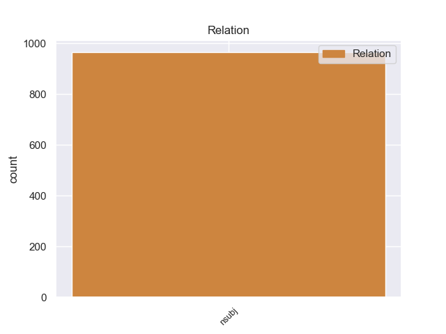
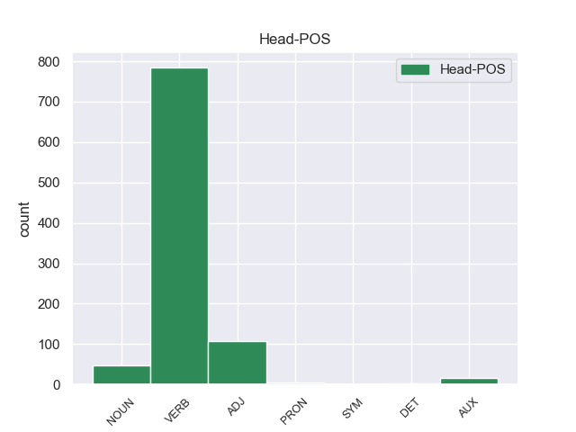
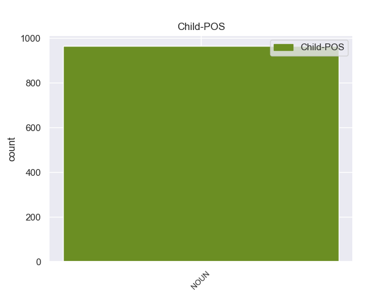

Distribution of features within this leaf



Agreement Rules sorted by frequency.
- When the dependent token is the nominal subject(nsubj) of the head token, and the dependent token is NOUN.
1 Υπάρχει _ _ _ _ 0 _ _ _
2 μια _ _ _ _ 0 _ _ _
3 άλλη _ _ _ _ 0 _ _ _
4 πλευρά _ _ _ _ 0 _ _ _
5 της _ _ _ _ 0 _ _ _
6 υπόθεσης _ _ _ _ 0 _ _ _
7 , _ _ _ _ 0 _ _ _
8 η _ _ _ _ 0 _ _ _
9 οποία _ _ _ _ 0 _ _ _
10 , _ _ _ _ 0 _ _ _
11 δυστυχώς _ _ _ _ 0 _ _ _
12 , _ _ _ _ 0 _ _ _
13 γεννά γεννάr VERB _ Mood=Ind|Number=Sing|Person=3|Tense=Pres|VerbForm=Fin 0 _ _ _
14 την _ _ _ _ 0 _ _ _
15 υποψία _ _ _ _ 0 _ _ _
16 ότι _ _ _ _ 0 _ _ _
17 η _ _ _ _ 0 _ _ _
18 πρόνοια πρόνοια NOUN _ Gender=Fem|Number=Sing 13 nsubj _ _
19 σχετικά _ _ _ _ 0 _ _ _
20 με _ _ _ _ 0 _ _ _
21 τις _ _ _ _ 0 _ _ _
22 προϋποθέσεις _ _ _ _ 0 _ _ _
23 ελεύθερης _ _ _ _ 0 _ _ _
24 διεξαγωγής _ _ _ _ 0 _ _ _
25 του _ _ _ _ 0 _ _ _
26 κοινοβουλευτικού _ _ _ _ 0 _ _ _
27 έργου _ _ _ _ 0 _ _ _
28 δεν _ _ _ _ 0 _ _ _
29 απασχόλησε _ _ _ _ 0 _ _ _
30 επαρκώς _ _ _ _ 0 _ _ _
31 την _ _ _ _ 0 _ _ _
32 εισαγγελική _ _ _ _ 0 _ _ _
33 αρχή _ _ _ _ 0 _ _ _
34 : _ _ _ _ 0 _ _ _
Disagree Examples:
1 Un _ _ _ _ 0 _ _ _
2 observador _ _ _ _ 0 _ _ _
3 externo _ _ _ _ 0 _ _ _
4 puede _ _ _ _ 0 _ _ _
5 tomar _ _ _ _ 0 _ _ _
6 directamente _ _ _ _ 0 _ _ _
7 las _ _ _ _ 0 _ _ _
8 medidas _ _ _ _ 0 _ _ _
9 nomotéticas _ _ _ _ 0 _ _ _
10 ( _ _ _ _ 0 _ _ _
11 ejemplos ejemplo NOUN _ Gender=Masc|Number=Plur 18 nsubj _ _
12 de _ _ _ _ 0 _ _ _
13 éstas _ _ _ _ 0 _ _ _
14 medidas _ _ _ _ 0 _ _ _
15 pueden _ _ _ _ 0 _ _ _
16 ser _ _ _ _ 0 _ _ _
17 el _ _ _ _ 0 _ _ _
18 peso peso NOUN _ Gender=Masc|Number=Sing 0 _ _ _
19 de _ _ _ _ 0 _ _ _
20 un _ _ _ _ 0 _ _ _
21 objeto _ _ _ _ 0 _ _ _
22 o _ _ _ _ 0 _ _ _
23 la _ _ _ _ 0 _ _ _
24 cantidad _ _ _ _ 0 _ _ _
25 de _ _ _ _ 0 _ _ _
26 veces _ _ _ _ 0 _ _ _
27 que _ _ _ _ 0 _ _ _
28 se _ _ _ _ 0 _ _ _
29 presenta _ _ _ _ 0 _ _ _
30 un _ _ _ _ 0 _ _ _
31 comportamiento _ _ _ _ 0 _ _ _
32 particular _ _ _ _ 0 _ _ _
33 ) _ _ _ _ 0 _ _ _
34 ; _ _ _ _ 0 _ _ _
1 El _ _ _ _ 0 _ _ _
2 Dniéper _ _ _ _ 0 _ _ _
3 tiene _ _ _ _ 0 _ _ _
4 una _ _ _ _ 0 _ _ _
5 densa _ _ _ _ 0 _ _ _
6 red _ _ _ _ 0 _ _ _
7 de _ _ _ _ 0 _ _ _
8 afluentes _ _ _ _ 0 _ _ _
9 , _ _ _ _ 0 _ _ _
10 más _ _ _ _ 0 _ _ _
11 de _ _ _ _ 0 _ _ _
12 la _ _ _ _ 0 _ _ _
13 mitad mitad NOUN _ Gender=Fem|Number=Sing 20 nsubj _ _
14 de _ _ _ _ 0 _ _ _
15 los _ _ _ _ 0 _ _ _
16 ríos _ _ _ _ 0 _ _ _
17 de _ _ _ _ 0 _ _ _
18 el _ _ _ _ 0 _ _ _
19 país _ _ _ _ 0 _ _ _
20 pertenecen pertenecer VERB _ Mood=Ind|Number=Plur|Person=3|Tense=Pres|VerbForm=Fin 0 _ _ _
21 a _ _ _ _ 0 _ _ _
22 su _ _ _ _ 0 _ _ _
23 cuenca _ _ _ _ 0 _ _ _
24 hidrográfica _ _ _ _ 0 _ _ _
25 . _ _ _ _ 0 _ _ _
1 La _ _ _ _ 0 _ _ _
2 antropóloga _ _ _ _ 0 _ _ _
3 Anamaría _ _ _ _ 0 _ _ _
4 Ashwell _ _ _ _ 0 _ _ _
5 se _ _ _ _ 0 _ _ _
6 llevó _ _ _ _ 0 _ _ _
7 las _ _ _ _ 0 _ _ _
8 manos _ _ _ _ 0 _ _ _
9 a _ _ _ _ 0 _ _ _
10 la _ _ _ _ 0 _ _ _
11 cabeza _ _ _ _ 0 _ _ _
12 cuando _ _ _ _ 0 _ _ _
13 escuchó _ _ _ _ 0 _ _ _
14 a _ _ _ _ 0 _ _ _
15 el _ _ _ _ 0 _ _ _
16 regidor _ _ _ _ 0 _ _ _
17 de _ _ _ _ 0 _ _ _
18 el _ _ _ _ 0 _ _ _
19 PAN _ _ _ _ 0 _ _ _
20 , _ _ _ _ 0 _ _ _
21 Pedro _ _ _ _ 0 _ _ _
22 Gutiérrez _ _ _ _ 0 _ _ _
23 Varela _ _ _ _ 0 _ _ _
24 , _ _ _ _ 0 _ _ _
25 decir _ _ _ _ 0 _ _ _
26 que _ _ _ _ 0 _ _ _
27 es _ _ _ _ 0 _ _ _
28 la _ _ _ _ 0 _ _ _
29 mayoría _ _ _ _ 0 _ _ _
30 de _ _ _ _ 0 _ _ _
31 los _ _ _ _ 0 _ _ _
32 ciudadanos _ _ _ _ 0 _ _ _
33 la _ _ _ _ 0 _ _ _
34 que _ _ _ _ 0 _ _ _
35 sí _ _ _ _ 0 _ _ _
36 quiere _ _ _ _ 0 _ _ _
37 el _ _ _ _ 0 _ _ _
38 progreso _ _ _ _ 0 _ _ _
39 de _ _ _ _ 0 _ _ _
40 Puebla _ _ _ _ 0 _ _ _
41 con _ _ _ _ 0 _ _ _
42 la _ _ _ _ 0 _ _ _
43 obra _ _ _ _ 0 _ _ _
44 de _ _ _ _ 0 _ _ _
45 el _ _ _ _ 0 _ _ _
46 Viaducto _ _ _ _ 0 _ _ _
47 Zaragoza _ _ _ _ 0 _ _ _
48 que _ _ _ _ 0 _ _ _
49 , _ _ _ _ 0 _ _ _
50 como _ _ _ _ 0 _ _ _
51 lo _ _ _ _ 0 _ _ _
52 han _ _ _ _ 0 _ _ _
53 demostrado demostrar VERB _ Gender=Masc|Number=Sing|Tense=Past|VerbForm=Part 0 _ _ _
54 académicos académico NOUN _ Gender=Masc|Number=Plur 53 nsubj _ _
55 e _ _ _ _ 0 _ _ _
56 investigadores _ _ _ _ 0 _ _ _
57 de _ _ _ _ 0 _ _ _
58 esta _ _ _ _ 0 _ _ _
59 ciudad _ _ _ _ 0 _ _ _
60 , _ _ _ _ 0 _ _ _
61 causará _ _ _ _ 0 _ _ _
62 un _ _ _ _ 0 _ _ _
63 daño _ _ _ _ 0 _ _ _
64 a _ _ _ _ 0 _ _ _
65 la _ _ _ _ 0 _ _ _
66 zona _ _ _ _ 0 _ _ _
67 monumental _ _ _ _ 0 _ _ _
68 capitalina _ _ _ _ 0 _ _ _
69 . _ _ _ _ 0 _ _ _
1 Muchos _ _ _ _ 0 _ _ _
2 deltanos deltano NOUN _ Gender=Masc|Number=Plur 4 nsubj _ _
3 han _ _ _ _ 0 _ _ _
4 optado optar VERB _ Gender=Masc|Number=Sing|Tense=Past|VerbForm=Part 0 _ _ _
5 por _ _ _ _ 0 _ _ _
6 mudar _ _ _ _ 0 _ _ _
7 se _ _ _ _ 0 _ _ _
8 a _ _ _ _ 0 _ _ _
9 otros _ _ _ _ 0 _ _ _
10 estados _ _ _ _ 0 _ _ _
11 cercanos _ _ _ _ 0 _ _ _
12 ( _ _ _ _ 0 _ _ _
13 Monagas _ _ _ _ 0 _ _ _
14 , _ _ _ _ 0 _ _ _
15 Bolívar _ _ _ _ 0 _ _ _
16 y _ _ _ _ 0 _ _ _
17 Anzoátegui _ _ _ _ 0 _ _ _
18 ) _ _ _ _ 0 _ _ _
19 en _ _ _ _ 0 _ _ _
20 búsqueda _ _ _ _ 0 _ _ _
21 de _ _ _ _ 0 _ _ _
22 fuentes _ _ _ _ 0 _ _ _
23 de _ _ _ _ 0 _ _ _
24 trabajo _ _ _ _ 0 _ _ _
25 ya _ _ _ _ 0 _ _ _
26 que _ _ _ _ 0 _ _ _
27 en _ _ _ _ 0 _ _ _
28 Tucupita _ _ _ _ 0 _ _ _
29 y _ _ _ _ 0 _ _ _
30 en _ _ _ _ 0 _ _ _
31 el _ _ _ _ 0 _ _ _
32 resto _ _ _ _ 0 _ _ _
33 de _ _ _ _ 0 _ _ _
34 los _ _ _ _ 0 _ _ _
35 municipios _ _ _ _ 0 _ _ _
36 no _ _ _ _ 0 _ _ _
37 hay _ _ _ _ 0 _ _ _
38 ningún _ _ _ _ 0 _ _ _
39 tipo _ _ _ _ 0 _ _ _
40 de _ _ _ _ 0 _ _ _
41 industrias _ _ _ _ 0 _ _ _
42 que _ _ _ _ 0 _ _ _
43 puedan _ _ _ _ 0 _ _ _
44 dar _ _ _ _ 0 _ _ _
45 le _ _ _ _ 0 _ _ _
46 impulso _ _ _ _ 0 _ _ _
47 a _ _ _ _ 0 _ _ _
48 su _ _ _ _ 0 _ _ _
49 economía _ _ _ _ 0 _ _ _
50 . _ _ _ _ 0 _ _ _
1 Ayer _ _ _ _ 0 _ _ _
2 , _ _ _ _ 0 _ _ _
3 a _ _ _ _ 0 _ _ _
4 su _ _ _ _ 0 _ _ _
5 vuelta _ _ _ _ 0 _ _ _
6 a _ _ _ _ 0 _ _ _
7 el _ _ _ _ 0 _ _ _
8 campamento _ _ _ _ 0 _ _ _
9 , _ _ _ _ 0 _ _ _
10 en _ _ _ _ 0 _ _ _
11 las _ _ _ _ 0 _ _ _
12 cercanías _ _ _ _ 0 _ _ _
13 de _ _ _ _ 0 _ _ _
14 Burgui _ _ _ _ 0 _ _ _
15 , _ _ _ _ 0 _ _ _
16 se _ _ _ _ 0 _ _ _
17 encontraron _ _ _ _ 0 _ _ _
18 con _ _ _ _ 0 _ _ _
19 la _ _ _ _ 0 _ _ _
20 lona _ _ _ _ 0 _ _ _
21 de _ _ _ _ 0 _ _ _
22 la _ _ _ _ 0 _ _ _
23 tienda _ _ _ _ 0 _ _ _
24 de _ _ _ _ 0 _ _ _
25 campaña _ _ _ _ 0 _ _ _
26 empleada _ _ _ _ 0 _ _ _
27 como _ _ _ _ 0 _ _ _
28 comedor _ _ _ _ 0 _ _ _
29 caída _ _ _ _ 0 _ _ _
30 por _ _ _ _ 0 _ _ _
31 la _ _ _ _ 0 _ _ _
32 fuerza _ _ _ _ 0 _ _ _
33 de _ _ _ _ 0 _ _ _
34 la _ _ _ _ 0 _ _ _
35 tormenta _ _ _ _ 0 _ _ _
36 , _ _ _ _ 0 _ _ _
37 y _ _ _ _ 0 _ _ _
38 llena _ _ _ _ 0 _ _ _
39 de _ _ _ _ 0 _ _ _
40 barro _ _ _ _ 0 _ _ _
41 , _ _ _ _ 0 _ _ _
42 a _ _ _ _ 0 _ _ _
43 el _ _ _ _ 0 _ _ _
44 igual _ _ _ _ 0 _ _ _
45 que _ _ _ _ 0 _ _ _
46 la _ _ _ _ 0 _ _ _
47 ropa _ _ _ _ 0 _ _ _
48 que _ _ _ _ 0 _ _ _
49 habían _ _ _ _ 0 _ _ _
50 tendido tender VERB _ Gender=Masc|Number=Sing|Tense=Past|VerbForm=Part 0 _ _ _
51 los _ _ _ _ 0 _ _ _
52 escolares escolar NOUN _ Gender=Masc|Number=Plur 50 nsubj _ SpaceAfter=No
53 . _ _ _ _ 0 _ _ _